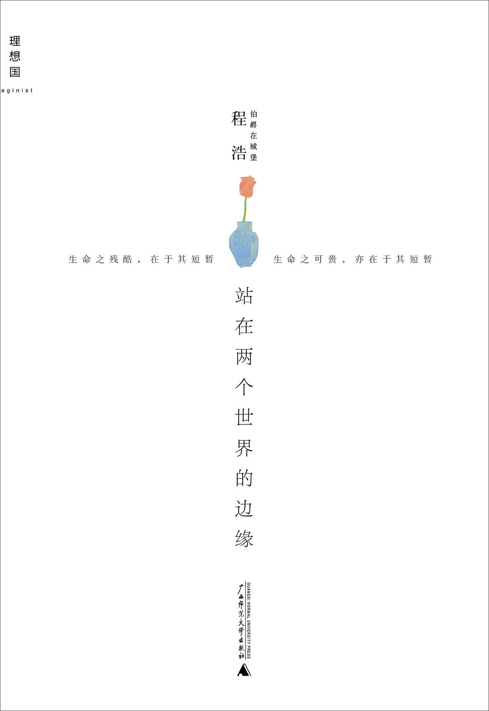

《站在两个世界的边缘》

总体观点
身体的残缺与不可逆的苦难是上帝抛掷的既定现实，但精神世界的尊严与疆界全凭自我开拓；接纳残酷的命途不等于自怜沉沦，以“职业病人”的自律与优雅生存，是对荒谬宿命最强大的反抗。
阅读绝非功利性获取谈资或装点人设的道具，而是肉身受困者抵御绝望、虚无与孤独的唯一救生艇；在文字与经典的交锋中，灵魂得以打破物理病榻的禁锢，穿梭于人类文明最深沉的苦难与博大之中。
生命的价值从不在于物理存活时间的漫长或勋章的堆叠，而在于面对未知的死亡深渊时，能否始终葆有一份温和克制的体面、明澈清醒的思辨，以及对他人苦难真挚纯粹的共情。
核心观点
-
1. “职业病人”的心态锚定：将绝境视为必须全职应对的专业工作
把不可抗逆的重度残疾转化为自身的“职业”，摒弃顾影自怜与道德绑架，以清醒、冷静且严谨的态度打理病榻上的每一天，从而夺回对生命的主权。
面对每天长达数小时的剧烈疼痛与变形肢体，程浩拒绝扮演博取同情的弱者角色，而是像上班打卡一样准时开机阅读、写作和思考。 -
2. 真正的强大源于对深渊的从容凝视与尊严坚守
世人常误以为“牛逼”是飞黄腾达与卓越征服，然而在命运狂暴摧折面前能够保持平静、不怨天尤人、昂首挺胸面对不可逆结局，才是灵魂至高无上的硬度。
在知乎回答“你觉得自己牛逼在哪儿”时，程浩写道：“我真正牛逼的地方，在于二十年来每天面对死神的威胁，依然能每天微笑着对生活说一声‘早安’。” -
3. 阅读作为抵抗肉身禁锢的精神飞地与认知解药
当肉体被终身禁锢在不到三十公斤的病躯中时，浩瀚的书籍构建起无限辽阔的平行时空；阅读让人跳出个人痛苦的狭隘视界，融入整个人类精神长河的悲喜。
尽管连家门都无法独自走出，但他通过阅读维特根斯坦、加缪、王小波与史铁生，在哲学思辨与文学巨著中建立了超越绝大多数健康人的精神原野。 -
4. 绝路上的搭桥逻辑：以向死而生的彻底清醒粉碎死亡恐惧
死亡是每个人唯一的终点，沉溺于对终局的恐惧只会虚耗眼前的当下；唯有坦然接纳死亡随时降临的必然性，生命中的每一分每一秒才能获得不可剥夺的沉甸分量。
在散文《绝路上的桥》中，他将死亡视为早晚要跨越的悬崖，既然无路可退，不如在深渊上方为自己架设一座由知识、热爱与尊严构筑的虹桥。 -
5. 刺破道德伪善与知识鄙视链的锐利理性
对世俗普遍存在的虚妄优越感（如读高雅书蔑视大众流行、以慈善之名行自恋之实）保持高度警惕，用极其严谨的逻辑与克制的毒舌剥除思想泡沫。
在剖析“读张爱玲是否比读张小娴高档”时，一针见血指出评判书籍高下的核心在于是否提供了诚实的认知增量，而非读者借以炫耀的阶层标签。 -
6. 尺素书信中的克制温度：向外界世界投递滚烫的心音
无论是写给作家的思想探讨、写给母亲的深沉家书，还是向优米网投递的求职信，字里行间没有一丝索取与卑微，全是以平等、专业和赤诚姿态建立的灵魂对话。
在致作家七堇年的信中，他既不避讳自身的困厄，也不过度拔高自身，而是就文学创作的真诚与文字的边界展开了极富教养的精神切磋。 -
7. 虚构叙事的造梦避难所：在故事世界中释放生命的多样可能
短篇小说创作是程浩突破现实肉身囚笼的终极飞跃；在虚构的寓言与冒险世界里，他替自己赋予了能够奔跑、痛饮与追逐星辰的自由灵魂。
在小说《切梦刀》与《唯酒无量》中，他借由侠客、流浪者与梦境旅人的视角，将现实中无法履行的奔跑与决绝倾注在刀光剑影与奇幻梦境之中。
全书结构
-
序言篇：序言与题记
收录蒋方舟序《世界上最强的少年》、编者按《写在阅读之前》、李哲《怀念程浩》及程浩自序，交代作者传奇而悲壮的生命背景，奠定全书向死而生的精神基调。
蒋方舟在序言中写下对程浩文字硬度的震撼，感叹其在逼仄病榻上构建出的辽阔精神版图令无数健全面孔蒙羞。 -
Part 1 世间慨
收录程浩对生命、命运、尊严与社会现象的核心散文与知乎高赞回答（如《你觉得自己牛逼在哪儿？》《昂着头的艺术》《失败之书》《我和老妈那些事儿》《地狱在身后》等），直面生死大问与苦难本质。
在《我和老妈那些事儿》中，用风趣幽默又令人落泪的笔触记录与母亲相依为命的日常，将沉重的苦难化为温暖的亲情守望。 -
Part 2 知无涯
聚焦读书方法、知识边界与认知进阶（涵盖《你为什么读书？》《当我们谈论读书时，我们在谈论什么？》《看百家讲坛和看书，哪个好一点？》《读书越多会越孤独吗？》等篇目），阐明阅读如何成为困顿肉身的精神解药。
在探讨“读书是否会让人孤独”时指出，平庸的合群是灵魂的消耗，在经典著作中遭遇伟大的灵魂才能获得高级的内在充实。 -
Part 3 尺素书
辑录程浩致七堇年、致张牧野（天下霸唱）、致优米网求职信、致小熊姐姐及致远方朋友的私密书信，展现他在与外界连接时未曾减损半分的赤诚、礼貌与智识光芒。
在向优米网投递的求职信中，以极其职业化的文字阐述自身的内容编辑与文案分析能力，绝不借残疾贩卖同情，只求凭文字实力换取工作机会。 -
Part 4 切梦刀
收录《唯酒无量》《紫色洋娃娃》《阁楼中的宝藏》《烧红的月亮》《原谅我，不能再带你一起飞翔》等中短篇小说与奇幻寓言，展示其脱离现实躯壳后的奔涌想象力。
在《切梦刀》中塑造快意恩仇、斩断虚妄梦魇的侠客形象，借虚构刀锋释放现实中无法动弹的身躯内积蓄的磅礴生命力。 -
Part 5 在知乎与思想残片
精选程浩在知乎社区与各路青年关于生活选择、人际关系与精神迷茫的交锋解答，附以其生命最后两三年用鼠标点出的日记残片与随感，构成生命的单行道见证。
解答年轻网友关于失恋与迷茫的提问时，以过来人的冷峻与温和告诫对方珍惜健康的四肢与每一个能够自主奔跑的清晨。